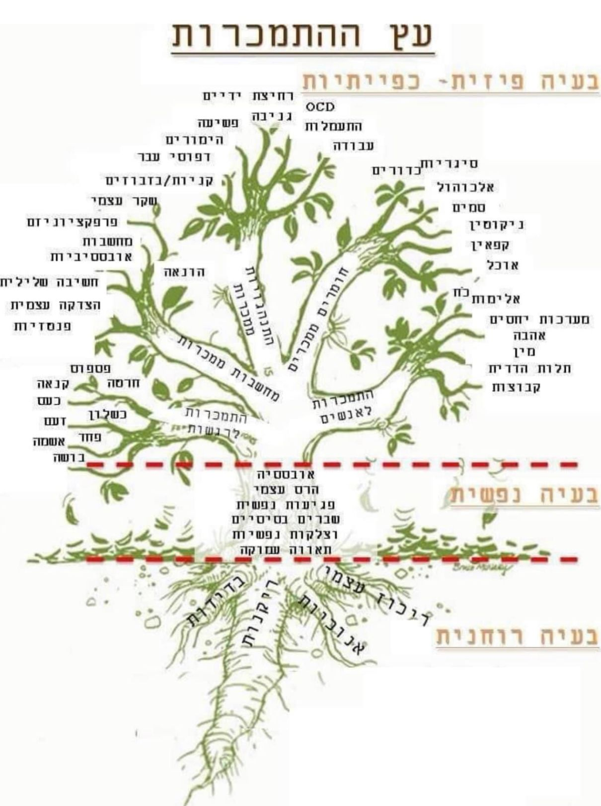

הליווי שלי הוא לאנשים שכבר עברו את השלב של "אולי זה יעבור". שמוכנים לעבוד, לא רק לדבר.
שמי עוזי בראל. אני מכור נקי — לא תיאוריה מהספרים אלא חיים שעוברים דרך הגוף. אני ממשיך לעבור תהליכים בעצמי, וזה משהו שאני לא מסתיר: זה מניע אותי וזה נותן לי יכולת אמיתית ללוות אנשים מהמקום הזה, לא מלמעלה.
אני מלווה אנשים שמתמודדים עם התמכרויות, משברי חיים וטראומות שלא מרפות. למדתי NLP, התמחיתי ב-CBT, התעמקתי בריברסינג, בעבודת הילד הפנימי, בפסיכותרפיה וטיפול ממוקד, בעבודה עם שנים-עשר הצעדים, באימון אישי ובהנחיית קבוצות. כל כלי לימד אותי משהו אחר — וביחד הם מאפשרים לי לגעת בשורש ולא רק בענף.
מעבר לכל הכלים — מה שאני מביא לחדר הוא ההבנה שמולך יושב אדם, לא אבחנה. שיש לך סיפור, וכואב לך, ואתה רוצה משהו אחר. השאלה היחידה שצריך לענות עליה עכשיו היא — האם אתה מוכן.
ההתמכרות, ההרס העצמי, טראומות ילדות שלא טופלו ומשברי החיים — כולם מתגלים למעלה, מעל האדמה. השורש האמיתי יושב עמוק יותר; כל עוד הוא לא מטופל, אותם ענפים יצמחו שוב, לפעמים בצורה חדשה.

סמים, אלכוהול, הימורים, מסכים, אוכל, סיגריות, עבודה, יחסים, דפוסי התנהגות. כל מה שאתה רואה ומנסה לעצור — זה השכבה שכולם מתעסקים בה. וזה לא עובד לבד.
הרס עצמי, פגיעות נפשית, שברים בסיסיים, צלקות, אובססיה, חרדה, טראומה. השכבה שמחזיקה את הענפים — וזו השכבה שרוב הטיפולים לא נוגעים בה באמת.
ניתוק מעצמי, חוסר קשר אנושי, בדידות, אובדן משמעות. כל עוד השורש מנותק — העץ ימשיך להוציא ענפים חדשים, גם אם תכרות אותם אחד-אחד. כאן מתחילה העבודה האמיתית.
המקום הזה — שבו אתה כבר ניסית את הכל, אבל הדפוס חוזר ומחזיק אותך — הוא לא סוף הדרך. הוא רק נקודה שבה שיטה אחרת חייבת להיכנס.
חומרים, אלכוהול, הימורים, מסכים, יחסים. הבטחת לעצמך עשרות פעמים — וזה חזר. אתה מתחיל לפקפק אם בכלל אפשר אחרת.
פרידה, אבל, פיטורים, הורות. הקרקע נשמטה — ואתה מנסה להחזיק את עצמך, אבל לא יודע איך לקום מזה באמת.
אותו ויכוח, אותה חרדה, אותה התפרצות. אתה רואה את זה קורה — ועדיין לא מצליח לשנות. כי שום אחד לא הראה לך איך.
משהו קרה מזמן, אולי לפני שהיו לך מילים בכלל. ואתה מרגיש שהמבוגר שאתה היום עדיין מנסה להגן על אותו ילד — בכל מחיר.
לא כל בעיה דורשת את אותו הכלי. בכל פגישה אנחנו בוחרים את מה שהכי מתאים לרגע שלך — ולפעמים משלבים כמה כלים ביחד. זה לא תבנית. זו עבודה אישית.
טיפול קוגניטיבי-התנהגותי. מזהים את המחשבה שמתניעה את ההתנהגות, פורקים אותה, ומחליפים אותה בכלים שעובדים. תוצאות נמדדות, לא תיאוריה.
תכנות נוירו-לשוני. הסיפור שאתה מספר לעצמך הוא הסיפור שאתה חי. כשמשנים את השפה הפנימית — משתנה הרגש, המעשה, וסוף-סוף גם התוצאה.
נשימה תודעתית מקשרת + עבודה עם הילד הפנימי. שחרור של מטענים שיושבים בגוף שנים, וחזרה למקום שבו הפגיעה הראשונית התחילה — כדי לרפא אותה מהיסוד.
מרחב שיח מעמיק ומכבד, שמייצר קשר וביטחון לעבור דרך תוכן, רגש והיסטוריה — בקצב שנכון לך וללא "לדחוף חתיכות".
עבודה שמחברת בין התנהגות, הרגל, כאב וזיכרון גוף — כדי לא לטפל רק בסימפטום שנראה היום, אלא במה שמזין אותו מבפנים.
שילוב עקרונות ומסגרת של שנים-עשר הצעדים כשמתאים — קהילה, אחריות, ומעטפת שמזכירה שאי אפשר לעשות הכול לבד.
חיבור בין גוף, משמעת רכה ומטרות יומיומיות — כדי לבנות עקביות, ביטחון ויכולת להחזיק שינוי גם מחוץ לחדר הטיפולים.
ליווי קבוצות ותהליכים קבוצתיים — כשהשדה המשותף עוזר לשבור בדידות, בושה ודפוסים של "רק אני".
כדי לכבד את הזמן של שנינו ולהבין אם יש התאמה — מילוי השאלון הוא תנאי לפני התקשרות או שליחת הודעה בוואטסאפ. התשובות יעזרו לי להגיע לשיחה כשאני כבר מבין את התמונה.
בחר/י איך נוח לשלוח אליי את התשובות. אחזור אליך בהקדם, וכשנדבר זה כבר יהיה ממקום של הבנה הדדית.
הצעד הראשון הוא מילוי השאלון הקצר. זו דרך הפנייה הראשונית שלי — אחריה אפשר להתקשר או לשלוח הודעה בוואטסאפ. אחזור אליך בהקדם, נסכם את ההמשך, ואם יש התאמה נקבע פגישה בתשלום. דיסקרטיות מלאה; אין התחייבות עד שמתאמים פגישה.
למילוי השאלון ←